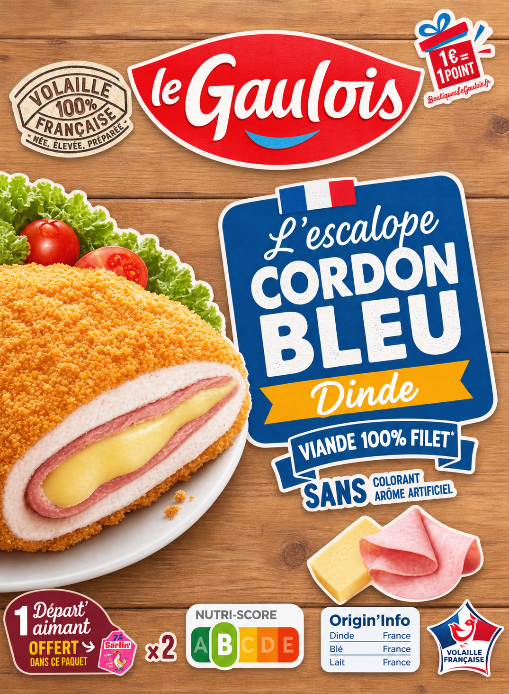

Volaille 100 % française
Une escalope de dinde dorée et croustillante, qui cache un cœur de jambon et de fromage fondant. Le plaisir d'un classique, prêt en quelques minutes.

Notre histoire
Le cordon bleu, c'est une fine escalope roulée autour de jambon et de fromage, panée puis dorée. Le Gaulois l'amène sur la table de tous les jours, avec une origine inscrite noir sur blanc sur la boîte.
01
La dinde naît en France. Le label « Volaille 100 % française » en est la garantie.
02
Elle grandit en France. La viande employée est 100 % filet, la partie la plus tendre.
03
Elle est préparée en France : jambon, fromage et une panure bien croustillante.
[À compléter : histoire de la marque Le Gaulois, date de création, éleveurs, régions.]
Le produit
Chaque boîte contient 2 escalopes. Sous la panure orangée, on trouve de la dinde bien blanche, du jambon rose et un fromage qui fond à la chaleur.
* Voir le détail sur l'emballage. Poids net : 200 g (2 × 100 g). Allergènes (indicatif) : blé (gluten), lait. [À compléter : liste complète des ingrédients, DLC.]
| Ingrédient | Origine |
|---|---|
| Dinde | France |
| Blé | France |
| Lait | France |
1 € = 1 point
Cumulez des points sur BoutiqueLeGaulois.fr.
Nutrition
Sur l'échelle de A (meilleur) à E, ce produit est classé B.
| Énergie | ≈ 968 kJ / 232 kcal |
| Matières grasses | ≈ 12 g |
| dont acides gras saturés | ≈ 3,3 g |
| Glucides | ≈ 15 g |
| dont sucres | ≈ 1,5 g |
| Fibres | ≈ 1,5 g |
| Protéines | ≈ 16 g |
| Sel | ≈ 1,1 g |
Valeurs indicatives, à vérifier avec le dos de l'emballage.
Conseils de préparation
Temps et températures indicatifs, à confirmer avec les indications au dos de la boîte.
Préchauffez à 210 °C (th. 7). Posez les escalopes sur une plaque avec du papier cuisson, environ 12 min, en les retournant à mi-cuisson.
Un filet d'huile, feu moyen. Environ 5 min de chaque côté, jusqu'à une belle couleur dorée.
Préchauffez à 200 °C, cuisez environ 12 à 14 min en retournant une fois. Sans ajout de matière grasse.
Important
Vérifiez que la viande est cuite à cœur et que le fromage est bien chaud. Respectez la date limite et les conditions de conservation indiquées sur la boîte.
Idées de repas
Salade verte, tomates cerises et un peu de vinaigrette, comme sur la boîte.
Purée maison ou frites, avec des haricots verts.
Coupée en tranches dans un pain frais, avec crudités et sauce au choix.